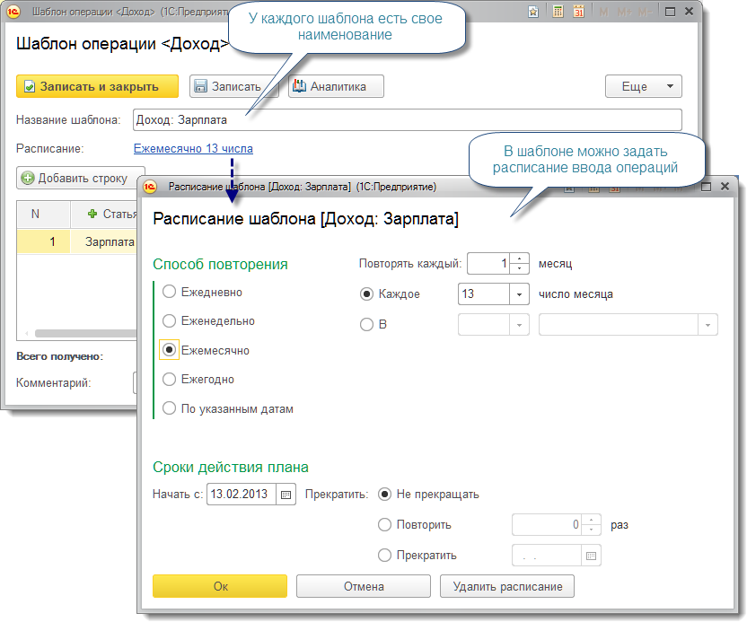
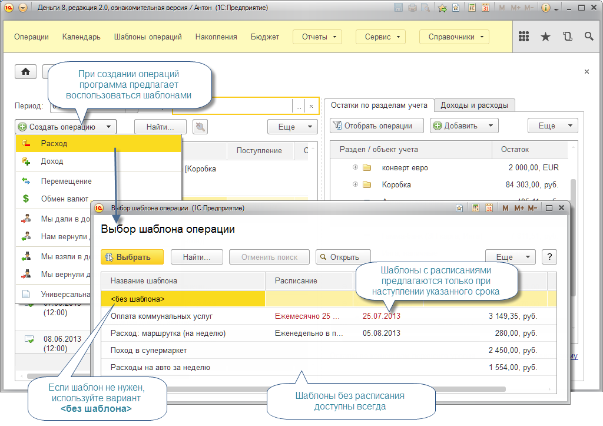

Шаблоны операций упрощают ввод однотипных и повторяющихся операций. Из любой операции, записанной в информацинную базу, можно сделать шаблон и, при желании, задать расписание для ввода повторяющихся операций.

Программа контролирует расписания по всем шаблонам и, при создании новых операций, предлагает воспользоваться шаблоном, по которому наступили очередные сроки ввода.

Задавать расписания в шаблоне не обязательно. Шаблоны без расписания удобно использовать для быстрого ввода операций не имеющих четкого графика, например, поход в продуктовый магазин, или расходы на бензин.
Управлять всеми запланированными операциями удобней всего из формы Календарь.